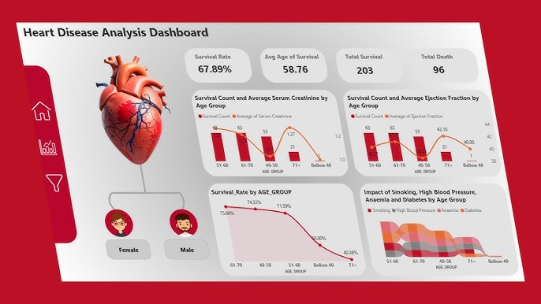

My Projects
Below are some of the key projects I've built, showcasing my experience in AI, ML, data science, and web development.
AI Chatbot
June 2025
Designed a smart pipeline to process PDFs, HTML, and text using advanced NLP (tokenization, stemming). Built similarity search with TF-IDF and Cohere's generative AI for context-aware responses. Developed a web interface for easy document upload and querying.
Technologies: Python, NLP, TF-IDF, Cohere API, Flask, JavaScript

Medical Advisor
Oct 2024 – Nov 2024
Built an ML prediction algorithm for medical decision support. Visualized insights with Seaborn and deployed via Flask for fast, accessible patient analysis. Collaborated with healthcare experts for accuracy improvements.
Technologies: Python, Seaborn, ML, Flask, Healthcare Analytics
Tutorial Website
Mar 2025 – Apr 2025
Built an interactive deep learning tutorial platform with a modular frontend and scalable PHP backend. Robust MySQL DB integration allows seamless handling of large datasets and rich multimedia learning materials.
Technologies: HTML, CSS, JavaScript, PHP, MySQL, Web APIs

Speech Emotion Recognition (SER)
Oct 2024
Developed an ML pipeline to classify emotions in audio recordings for customer service and HCI applications. Thoroughly evaluated model performance (accuracy, precision, recall, F1).
Technologies: Python, ML, Audio Processing, Data Science
Flight Booking Price Prediction
2024
Created a dynamic ML model to predict flight ticket prices based on historical and real-time data. Designed front-end UI for users to estimate and visualize price trends. Improved travel planning accuracy.
Technologies: Python, ML, Data Visualization, Web Development

Data Analysis in Heart Disease
2024
Performed exploratory data analysis and predictive modeling for heart disease datasets. Identified correlations between risk factors and outcomes, using ML models to visualize and improve diagnosis support.
Technologies: Python, Pandas, Scikit-learn, Data Visualization

Customer Churn Prediction
2025
Developed a data-driven machine learning model to predict customer churn for subscription-based businesses. Performed in-depth exploratory data analysis, engineered key behavioral features, and trained classifiers (Logistic Regression, Random Forest, XGBoost) to identify high-risk clients. Deployed a user interface for business teams to input customer profiles and visualize churn probabilities, enabling targeted outreach and improved retention strategies.
Technologies: Python, Pandas, Scikit-learn, XGBoost, Data Visualization, Flask
AI Astrologer Application
2025
Developed a web-based AI-powered astrology platform where users enter birth details (Name, Date, Time, Place) to receive personalized astrological insights. The app calculates natal Sun, Moon, and Ascendant signs using Swiss Ephemeris, predicts personality traits via a PyTorch neural network, and answers free-text user questions with a hybrid rule-based and AI-driven response system. The frontend provides a clean, responsive UI with form validation and real-time feedback, while the Flask backend processes astrological computations, geolocation, timezone conversions, and natural language processing. This project involved tackling challenges in geolocation accuracy, error handling, and user input normalization.
Technologies: Flask, Python, PyTorch, pyswisseph, Geopy, Timezonefinder, NLTK, AJAX, HTML/CSS/JavaScript